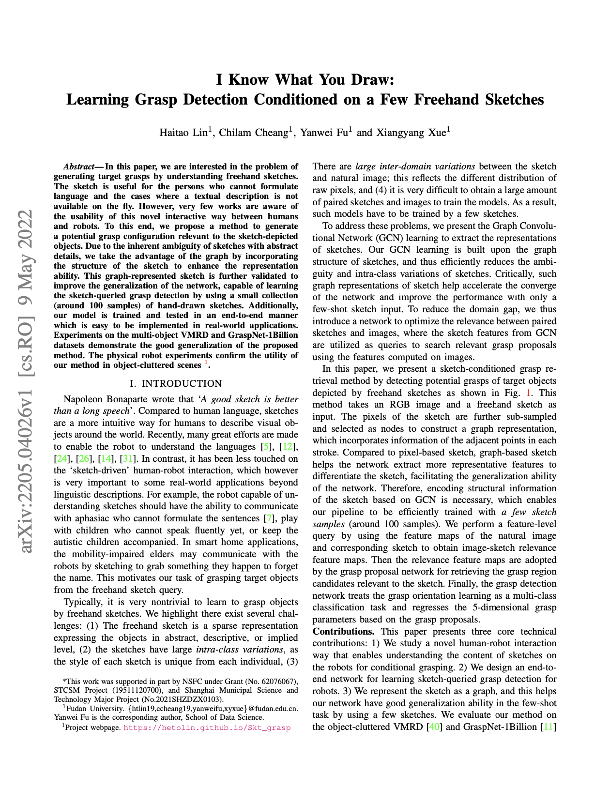

|
Fudan University
|
In this paper, we are interested in the problem of generating target grasps by understanding freehand sketches. The sketch is useful for the persons who cannot formulate language and the cases where a textual description is not available on the fly. However, very few works are aware of the usability of this novel interactive way between humans and robots. To this end, we propose a method to generate a potential grasp configuration relevant to the sketch-depicted objects. Due to the inherent ambiguity of sketches with abstract details, we take the advantage of the graph by incorporating the structure of the sketch to enhance the representation ability. This graph-represented sketch is further validated to improve the generalization of the network, capable of learning the sketch-queried grasp detection by using a small collection (around 100 samples) of hand-drawn sketches. Additionally, our model is trained and tested in an end-to-end manner which is easy to be implemented in real-world applications. Experiments on the multi-object VMRD and GraspNet-1Billion datasets demonstrate the good generalization of the proposed method. The physical robot experiments confirm the utility of our method in object-cluttered scenes.
|  |
H. Lin, C. Cheang, Y. Fu, X. Xue
I Know What You Draw: Learning Grasp Detection Conditioned on a few freehand Sketches ICRA 2022. [arXiv] |
Videos |
|
|

Acknowledgements
Xiangyang Xue and Yanwei Fu are the corresponding authors. This work was supported in part by NSFC under Grant (No. 62076067), STCSM Project (19511120700), and Shanghai Municipal Science and Technology Major Project (No.2021SHZDZX0103).
The website is modified from this template.
|